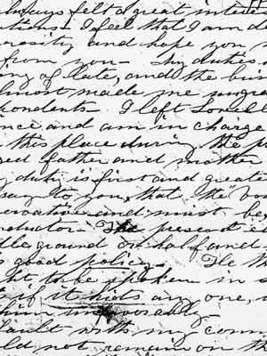

home | many pasts | evidence | www.history | blackboard | reference
talking history | syllabi | students | teachers | puzzle | about us
talking history | syllabi | students | teachers | puzzle | about us
Produced in association with Visible Knowledge Project
 |
|||||
| Scholars
In Action presents case studies that demonstrate how scholars interpret
different kinds of historical evidence. These letters were written by labor
activist, reformer, and entrepreneur Sarah Bagley in 1846 and 1848 to Angelique
Martin, a prominent reformer and champion of women's rights.
Bagley advocated on behalf of the young female workers employed in textile
mills in Lowell, Massachusetts, and elsewhere in New England and was also
involved in campaigns for women's rights. Her career, and these letters,
reflect the ways that movements for women's rights, factory workers' rights,
and the abolition of slavery intertwined in the 1840s and 1850s, including
debates comparing the working and living conditions of slaves to those of
northern factory workers.
Before you move to the next page read these three
letters yourself. How does Sarah Bagley address Mrs. Martin, and what
is she asking of her? What do these letters tell you about the ideas and
tactics of these mid nineteenth-century female reformers? What is puzzling
or confusing about these letters? Published July 2002. Cite as: Teresa Murphy, "Analyzing Letters," History Matters: The U.S. Survey Course on the Web,
http://historymatters.gmu.edu/mse/sia/letters.htm, July 2002. |
|||||
| [read letters one , two & three] | |||||